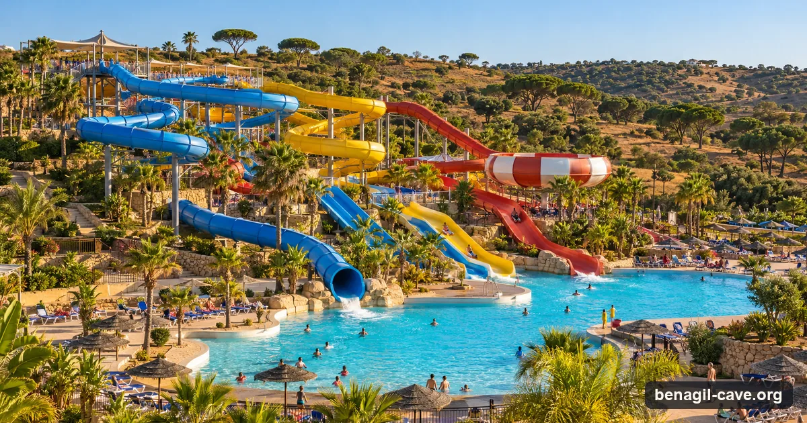
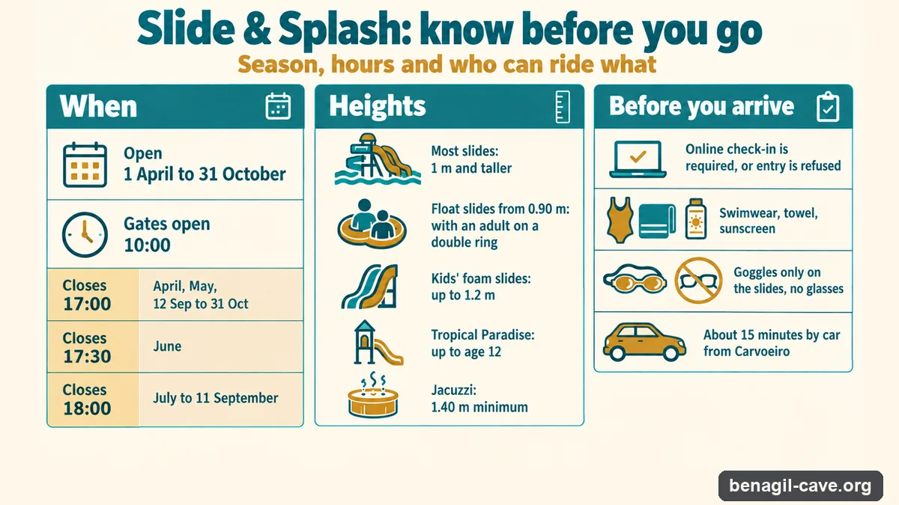

One of the Algarve's biggest water parks is in the same municipality as the cave, about 15 minutes by car from Carvoeiro. It makes a good afternoon after an early boat, or a plan B when the swell shuts the cave. Here's what to know before you take the kids.

Slide & Splash is a full-day park on the EN125 at Vale de Deus, Estombar. It has slides for every nerve level: the Big Wave and the Big Fall, a capsule drop the park calls its fastest ride, plus the Black Hole, the Banzai, a six-lane Race and the Disco River slide. The newest area adds the Boomerang, a float ride with light effects. Small children get their own water world, Tropical Paradise, and a set of foam slides.
For the adults who'd rather not, there's the big Laguna pool, a jacuzzi, a massage and fish spa (paid extra), six places to eat and 15 cabanas you can only rent at the park. Parking is free.
Guests mostly write about how clean and well staffed it is. A September reviewer from the UK chose it because her son was "not yet 120cm", and wrote that apart from one ride he got on everything. Another family, in their forties, "probably enjoyed it more than the kids".

Check in online before you leave. The listing says entry is refused without it, ticket or not. You do it at tickets-slidesplash.com/checkin.
Open 1 April to 31 October in 2026, from 10:00. It closes at 17:00 in April, May and from 12 September, at 17:30 in June, and at 18:00 from July to 11 September. The park can close all or part of itself without notice for safety or weather.
Most slides need 1 metre. From 0.90 to 1.20 metres a child can take the float slides with an adult on a double ring. The foam slides are for kids up to 1.2 metres, Tropical Paradise for children up to 12, and the jacuzzi needs 1.40 metres.
The park asks that you can swim. The children's pool is 0.2 to 0.4 metres deep, but the main pools go from 1 to 1.6 metres. The listing also flags it as unsuitable for pregnant visitors and anyone claustrophobic.
Swimwear, a towel and sunscreen. Goggles are allowed on the slides, glasses aren't. Weight limits are 100 kg on a single float, 200 kg on a double and 136 kg on the body slides.
Lagoa: Slide & Splash Water Park Entrance Ticket · 4.6★ from 6,440 reviews · from $36 · free cancellation up to 3 days before. Children's tickets cost less; the calendar shows each price.
Price, rating and review count from our October 2026 data check. The 2026 season ends on 31 October.
The two fit together without much planning. Benagil's first boats leave around 07:30 to 09:00, when the light is soft and the sea is usually at its calmest, and a trip from Carvoeiro is back well before lunch. Drive the 10 km inland, eat at the park, and you still have the afternoon on the slides before it closes.
It works the other way round too. When the swell is over about 1.5 metres the cave closes to boats, and operators cancel. A water park a short drive away is a decent consolation, and the park doesn't care what the Atlantic is doing.
Every Benagil tour you can book, compared by town, craft, cave time and price.
See the operator comparison →For a family with children who can swim and are at least 1 metre tall, yes: most of the slides open up at that height, there is a separate children's area, and 6,440 reviews on GetYourGuide average 4.6 out of 5. It is less of a fit for toddlers who will only use the shallow pool, and it gets crowded around midday in July and August.
Yes. The 2026 season runs from 1 April to 31 October, and from 12 September to 31 October the park is open from 10:00 to 17:00. The park can close fully or partly without notice for safety or weather reasons, so check before you drive over.
On GetYourGuide an entrance ticket starts from about $36 a person (checked October 2026), with free cancellation up to 3 days before. Children's tickets cost less, and the calendar shows the price for each age. If you want to come back, the park sells a second-day ticket for €16 during your first visit.
There is no minimum age to get in; the rules are by height. Most slides need riders to be at least 1 metre tall. On the float slides, children from 0.90 to 1.20 metres can ride with an adult on a double ring. The children's foam slides are for kids up to 1.2 metres, Tropical Paradise is for children up to 12, and the jacuzzi needs 1.40 metres.
It depends on where you are staying and how old the group is. Slide & Splash, at Estombar in Lagoa, is the one to check first from Carvoeiro, Lagoa or Portimão and suits mixed-age families. Aqualand, on the EN125 near Alcantarilha, is known for steeper drop slides that teenagers go for, and is closer to Albufeira and Armação de Pêra.
The park's own description does not list a slow lazy river. Its river-named attractions are rides: the Disco River slide, and the Boomerang, a float trip with light effects. For floating about, there is the large Laguna pool, and a jacuzzi for those 1.40 metres and taller.
The park sells a second-day ticket for €16, valid in both seasons, if you buy it at the park during your first visit or as part of a two-day pack. In 2026 it also ran an early-bird offer, 15% off one-day tickets bought online between 9 January and 10 March.
At Slide & Splash it comes down to height, not age. A three-year-old under 1 metre can use the children's foam slides and the Tropical Paradise area, and from 0.90 metres can go on the float slides with an adult on a double ring. Most of the bigger slides need 1 metre.
At Slide & Splash the limits are 100 kg on a single float, 200 kg on a double float and 136 kg on the body slides.
Season, hours and offers from the park's website; heights, limits and check-in from its 2026 listing; travel times from Algarve visitor guides. Checked October 2026.